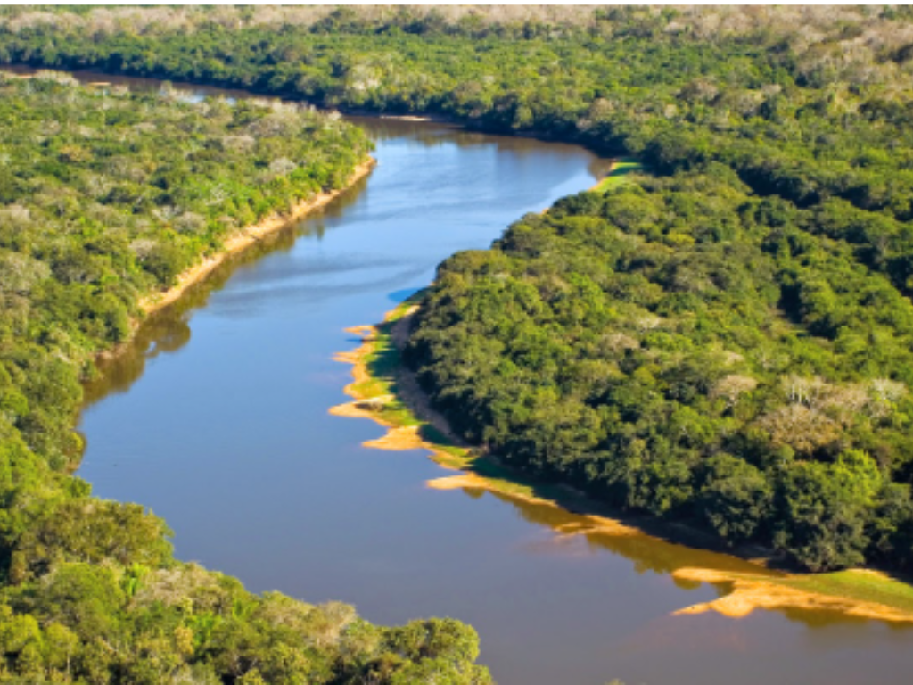

O estado de Mato Grosso do Sul está localizado na região Centro-Oeste do Brasil e é conhecido por suas belas paisagens naturais. Sua capital é Campo Grande, considerada uma das cidades mais arborizadas do país. A economia do estado é baseada principalmente na agropecuária, com destaque para a criação de gado e produção agrícola. Grande parte do Pantanal находится no território sul-mato-grossense, atraindo turistas do mundo inteiro. Além disso, Mato Grosso do Sul possui rica biodiversidade e forte influência cultural indígena e sertaneja.

Voltar